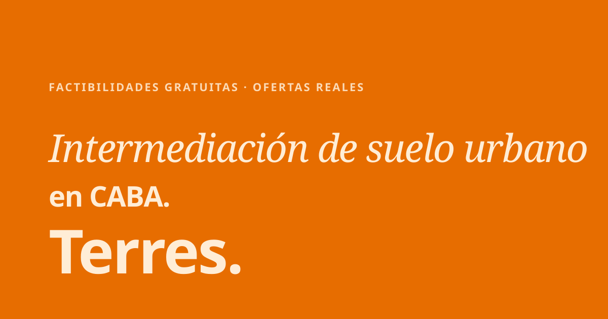

Brand assets — variantes del wordmark, ícono, favicon, og-image
 primary on cream
primary on cream
 cream on orange
cream on orange
 foreground on editorial
foreground on editorial
mono · positive · print B/W
mono · negative · dark / press
Icono cuadrado · favicon · social avatar
64 / 32 / 16 px
Zona de exclusión · mínimo X = altura de la "T"
Terres.
X
X
X
X
Mín. digital
altura 16px
altura 16px
Mín. impresión
altura 8mm
altura 8mm
Mín. favicon
16×16 (sin "Terres", solo "T.")
16×16 (sin "Terres", solo "T.")
Open Graph · 1200 × 630

Reglas: nunca distorsionar · nunca rotar · nunca cambiar el espacio entre letras · siempre con punto · siempre Plex Sans Bold 700.